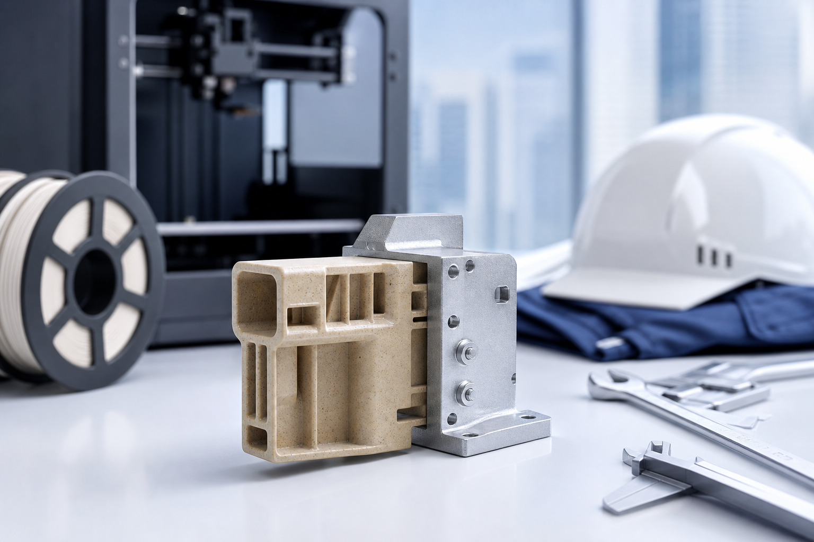
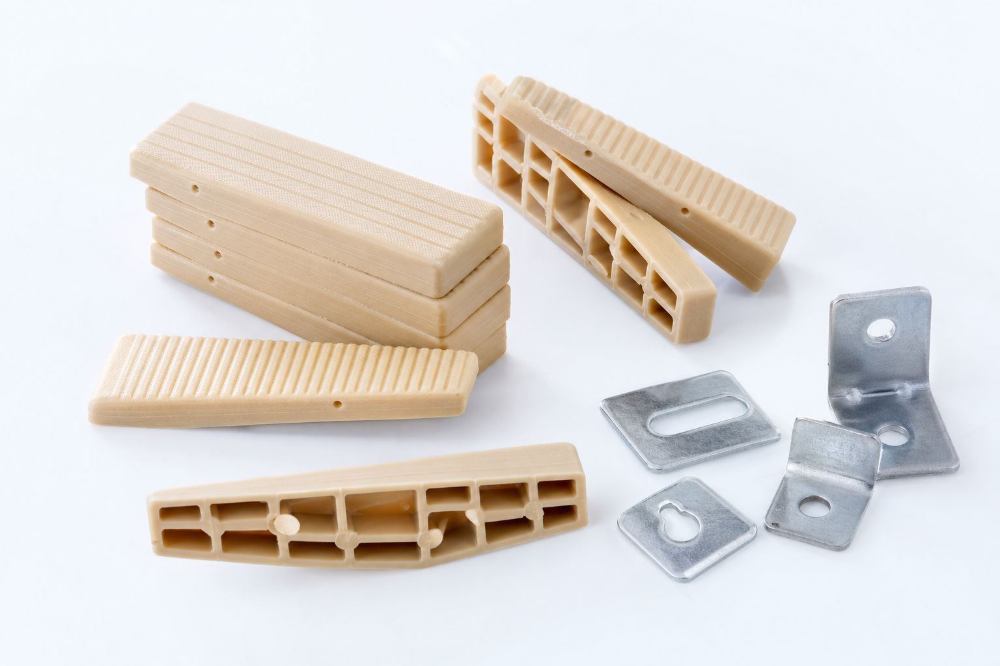
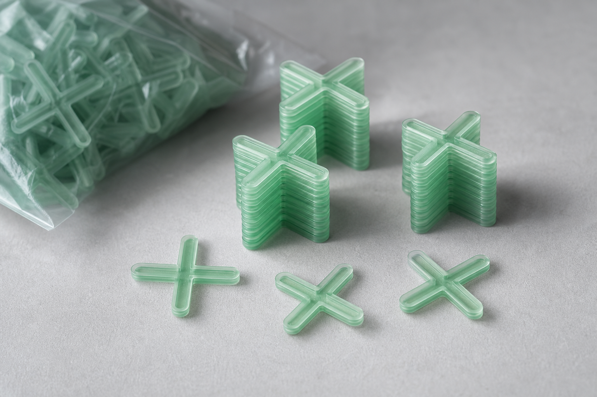
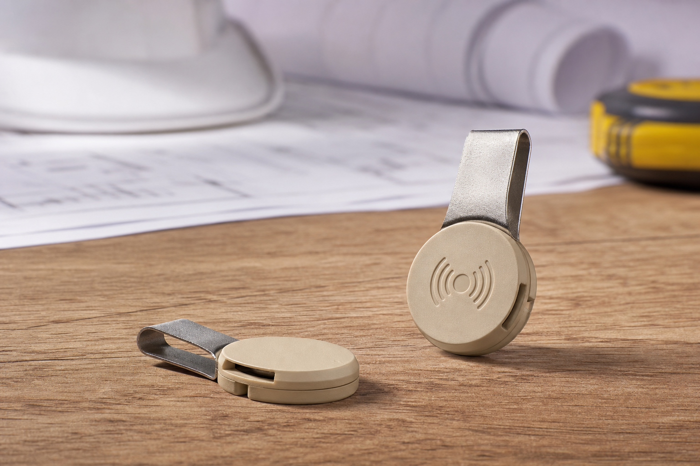
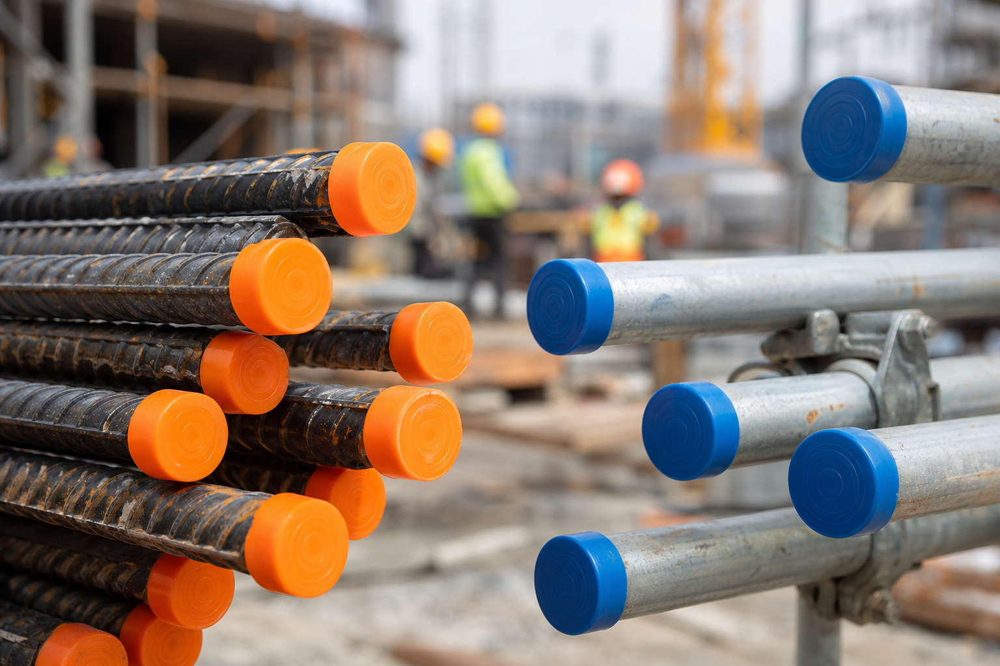
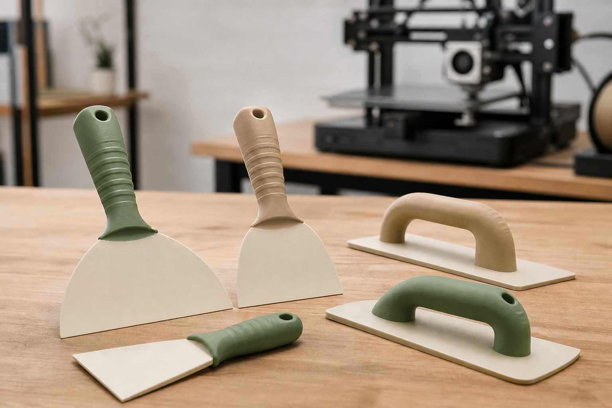

金属パーツ
強度と耐久性が求められる部位に金属部品を採用。切り出し工程は就労支援施設のオペレーションに最適化。
金属パーツと植物由来プラスチック（PLA）を融合。既存品を切り替えるだけで、サプライチェーンのグリーン化と現場イノベーションを同時に実現します。

強度と耐久性が求められる部位に金属部品を採用。切り出し工程は就労支援施設のオペレーションに最適化。
トウモロコシ・サトウキビ由来の生分解性プラスチック。3Dプリンタで均一な品質を実現し、環境負荷を低減。
PLA部分は現場の知見に合わせて自由に改良。月1回の無料3Dデータ作成で翌月に特注品を納品。
建設・外構現場で使われる汎用部品を、LIBERTA P へ。いずれも金属＋PLAの複合構造で、プラスチック部分の特注が可能です。

建具や内装部材の隙間調整用スペーサー。PLA部分を現場条件に合わせてカスタマイズ可能。

目地幅を均一に保つ使い捨てスペーサー。施工後は土に還るPLA素材を採用。

仮設資材の所在・貸出管理をNFCでトレース。金属部とPLAタグ本体の複合構造。

先端の安全保護と視認性向上。色・サイズを現場ルールに合わせてカスタマイズ。

職人の手癖や現場に合わせた形状設計。シニアの暗黙知をヘラ形状に反映しやすい製品。

水源涵養のための森林管理を現場作業員が支援。東京大学農学博士と連携し、科学的根拠に基づく保全・再生を推進。PLA製品開発と、会計情報からのCO2排出量可視化、中小企業版SBT認定支援まで一気通貫でサポートします。

PLA製造現場で障害者雇用・就労支援施設と連携。3Dプリンタによる品質均一化、音声入力・リモートワーク、多言語対応。シニア層の暗黙知をヒアリングシートで引き出し、月1回無料の3Dデータ作成で即座に現物化します。

外部有識者による科学的裏付けでグリーンウォッシュを防止。福祉事務所との公的提携で適正な労働環境を担保。IoT機器による活動の可視化とトレーサビリティで、対外発信に耐えるエビデンスを提供します。
購買がそのままESG活動に。東大監修レポート・IoTデータでグリーンウォッシュリスクをゼロ化。IR・広報にそのまま活用できます。
CAD不要。月1回無料の3Dデータ化で翌月に現物が届く。ホスピタリティの高い専任コンシェルジュが窓口に対応します。
ヒアリングシートを共通言語に、現場の知見をスムーズに引き出し。CAD化の負担や世代間コミュニケーション疲労から解放されます。
3Dプリンターは初年度レンタル、1年継続で所有権を無償譲渡。初期投資リスクなく社内にモノづくり環境を構築できます。
内職から製造パートナーへ。国の補助金を活用し、3Dプリンタとマニュアルで指導負担を劇的に軽減。販売支援は当社が担います。
障害特性に合った環境で音声入力・リモートワーク対応。誰でも高品質な製品を作れる達成感と、東大監修ブランドへの誇り。
英語・ネパール語・スリランカ語など多言語スタッフと連携。言語の壁を越えた安定した製造オペレーションを実現します。
外注ではなくノウハウ・システムのライセンス提供。現場からの要望には無料で3Dデータを作成し、ボトムアップの改善を支援します。
開発した特注3Dデータを専用Web上でシェア・有料販売。自社の業務改善アイデアが新たな収益源に変わります。
画期的なアイデアには特許申請の伴走支援。環境配慮型製品としてのブランド価値を維持したまま世に送り出せます。
製品購入者が共同運営者として名乗り、環境・作業レポートを定期取得。単なる消費を超えた共創モデルです。
定期購入を基本に、月1回の無料3Dデータ作成とESGレポートをパッケージ。継続的なイノベーションを支援します。
土壌の専門家をはじめ外部有識者が監修。すべての環境保全・削減効果に科学的裏付けを付与します。
行政機関の基準に則った適正な労働環境。透明性の高いソーシャル・ガバナンスを証明します。
森林保全現場や製造現場をセンサー・カメラで記録。客観的データに基づく報告を提供します。
GX推進、スタートアップ、ソーシャルビジネス助成金の要件に合致。東京から新しい経済と福祉の循環モデルを発信します。

東京大学 農学博士 ほか外部有識者
LIBERTA LABは、現場で培った施工力を土台に、学術的知見とテクノロジーを掛け合わせる研究開発部門です。グリーンウォッシュのない、確かなエビデンスで企業のESG推進を支えます。